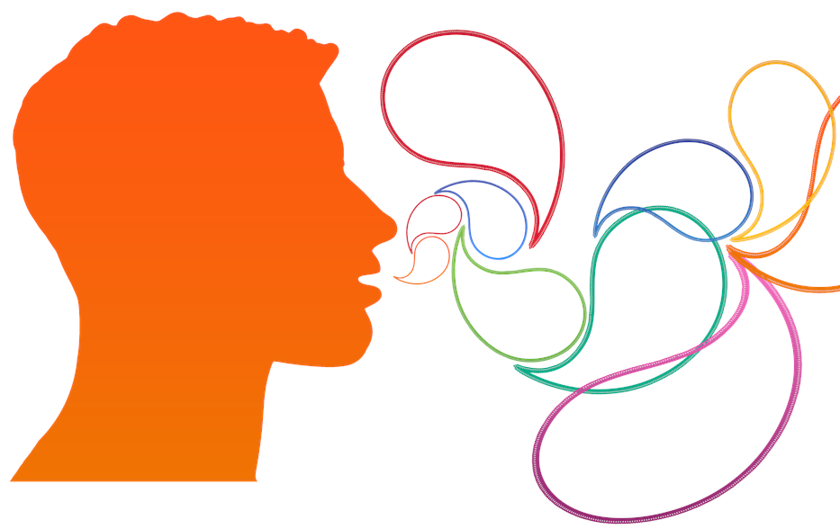

Note
This post discuss the difficulties of communicating while developing open-source projects and tries to gives some simple advice.
A large software project is above all a social exercise in which technical experts try to reach good decisions together, for instance on github pull requests. But communication is difficult, in particular between diverging points of view. It is easy to underestimate how much well-intended persons can misunderstand each-other and get hurt, in open source as elsewhere. Knowing why there are communication challenges can help, as well as applying a few simple rules.
The first challenge is to understand the other’s point of view: the different parties see the problem differently.
Maintainer’s anxiety
Open source can be anxiety-generating for the maintainers
Maintainers ensure the quality and the long-term life of an open-source project. As such, they feel responsible for any shortcoming in the product. In addition, they often do this work because they care. But they can quickly become a converging point of anxiety-generating feedback:
- Code has bugs; the more code, the more bugs. Watching a issue tracker fill up with a long list of bugs is frightening to people who feel in charge.
- Given that maintainers are visible and qualified, they become the target of constant requests for attention: from pleas to prioritize a specific issue to solicitations for advice.
- A small fraction of these interactions come as plain aggressions. I have been insulted many times by unsatisfied users. Each time, it hurts me a lot. My policy is to disengage from the conversation, but I am left shaking and staring at my computer in the evening.
The more popular a project, the more weight it puts on its maintainers’ shoulders. A consequence is that maintainers are tired, and can sometimes approach discussions in a defensive way. Also, we may be plain scared of integrating a code that we do not fully comprehend.
Open-source developers may even, unconsciously, adopt a simple, but unfortunate, protection mechanism: being rude. The logic is flawless: if I am nasty to people, or I set unreasonnable expectations, people will let me alone. Alas, this strategy leads to toxic environments. It not only makes people unhappy but also harms the community dynamics that ground the excellence of open source.
The danger abusive gatekeeping
A maintainer quickly learns that every piece of code, no matter how cute it might be, will give him work in the long run, just like a puppy. This is unavoidable given that the complexity of code grows faster than its number of features [1], and, even for a company as rich as Google, project maintenance becomes intractable on huge projects [2].
| [1] | An Experiment on Unit Increase in Problem Complexity, Woodfield 1979 |
A maintainer’s job is to say no often, to protect the project. But, as any gatekeeping, it can unfurtunately become an excercise in unchecked power. Making objective choices for these difficult decisions is hard, and we all tend naturally to trust more people that we know.
Most often we are not aware of our shortcomings, let alone are we doing them on purpose.
Contributor’s fatigue
A new contributor starting a conversation with a group of seasoned project maintainers may easily feel an imposter. The new contributor knows less about the project. In addition, he or she is engaging with a group of people that know each-other well, and is not yet part of that inner group.
This person does not know the code base, or the conventions, and must make extra efforts, compared to the seasoned developers, to propose a contribution suitable for the project. Often, he or she does not understand fully the reasons for the project guidelines, or for the feedback given. Request for changes can easily be seen as trifles.
Integrating the contribution can often be a lengthy process –in particular in scikit-learn. Indeed, it will involve not only shaping up the contribution, but also learning the skills and discovering the process. These long cycles can undermine motivation: humans need successes to feel enthusiasm. Also, the contributor may legitimately worry: Will all these efforts be fruitful? Will the contribution make its way to the project?
Note that for these reasons, it is recommended to start contributing with very simple features, and to seek feedback on the scope of the contribution before writing the code.
Finally, contributors are seldom paid to work on the project, and there is no single line of command that makes decisions and controls incentives for all the people on the project. No one is responsible when things go astray, which means that the weight falls on the shoulder of the individuals.
The danger behind the lengthy cycle of reviews and improvements needed to contribute is death by a thousands cuts. The contributor looses motivation, and no longer finds the energy to finish the work.
How about users?
This article is focused on developers. Yet, users are also an important part of the discussion around open source.
Often communication failures with users are due to frustration. Frustration of being unable to use the software, of hitting a bug, of seeing an important issue still not addressed. This frustration stems from incorrect expectations, which can often be traced to misunderstanding of the processes and the dynamics. Managing expectations is important to improve the dialogue, via the documentation, via notes on the issue tracker.
Communication is hard
Communication is hard: messages are sometimes received differently than we would like. Overworked people discussing very technically challenging issues only makes the matter worse. I have seen people not come across well, while I know they are absolutely lovely and caring.
We are human beings; we are limited; we misunderstand things, and we have feelings.
Emotions – My most vivid memory of a communication failure was when I was a sailing instructor. Trainees that were under my responsibility had put themselves at risk, causing me a lot of worry. During the debrief, I was angry. My failure to convey the messages without emotional loading undermined my leadership on the group, putting everybody at risk for the rest of the week.
Inability to understand the others’ point of view, or to communicate ours, can bring in emotions. Emotions most often impedes technical communication.
Limited attention – We, in particular maintainers, are bombarded with email, notifications, text and code to read. As a consequence, it is easy to read things too fast, to stop in the middle, to forget.
Language barriers – Most discussions happen in English; but most of us are not native English speakers. We may hide well our difficulties, but nuances are often lost.
Clique effects – Most interactions in open source are done in writing, with low communication bandwidth. It can be much harder to convince a maintainer on the other side of the world than a colleague in the same room. Schools of thoughts naturally emerge when people work a lot together. These create bubbles, where we have the impression that everything we say is obvious and uncontroversial, and yet we fail to convince people outside of our bubble.
Little things that help
Communication can improved by continuously working on it [3]. It may be obvious to some, but it personally took me many years to learn.
| [3] | Training materials for managers often discuss communication, and give tricks. I am sure that there are better references than my list below. But that’s the best I can do. |
Hear the other: exchange
Foster multiway discussions – The goal of a technical discussion is to come up to the best solution. Better solutions emerge via confronting different points of view: a single brilliant individual probably cannot find or recognize the best solution alone.
- Integrate input from as many perspectives as possible.
- Make sure everyone feels heard.
Don’t seek victory – Most important to keep in mind is that giving up on an argument and accepting the other point of view is a perfectly valid option. I naturally biased to think that my view on topics dear to me is the right one. However, I’ve learned that adopting the view of the other could bring a lot to the social dynamics of a project: we are often debating over details and the bigger benefit comes from moving forward.
In addition, if several very bright people have different conclusions than me about something that they’ve thought a lot, who am I to disagree?
Convey ideas well: pedagogy
Explain – Give the premises of your thoughts. Unroll your thought promises. People are not sitting in your head, and need to hear not only your conclusion, but how you got there.
Repeat things – Account for the fact that people can forget, and never hesitate to gently restate important points. Reformulating differently can also help explaining.
Keep it short – A typical reading speed is around 200 words a minute. People have limited time and attention span. The greatest help you can provide to your reader is to condense your ideas: let us avoid long threads that require several dozens of minutes to read and digest. There is a tension between this point and the above. My suggestion: remove every word that is not useful, move details to footnotes or postscriptums.
Cater for emotions: tone
Stay technical – Always try to get to the technical aspect of the matter, and never the human. Give specific code and wording suggestions. When explaining a decision, give technical arguments, even if they feel obvious to you.
Be positive – Being positive in general helps people feeling happy and motivated. It is well known that positive feedback leads to quicker progress than negative, as revealed eg by studies of class rooms. I am particularly guilty of this: I always forget to say something nice, although I may be super impressed by a contribution. Likewise, avoid negative words when giving feedback (stay technical).
Avoid “you” – The mere use of the pronoun “you” puts the person we are talking to in the center of message. But the message should not be about the person, it should be about the work. It’s very easy to react emotionally when it’s about us. The passive voice can be useful to avoid putting people as the topic. If the topic is indeed people, sometimes “we” is an adequate substitute for “you”.
Assume good faith – There are so many misunderstandings that can happen. People forget things, people make mistakes, people fail to convey their messages. Most often, all these failures are in good faith, and misunderstandings are legitimate. In the rare cases there might possibly be some bad faith, accounting for it will only make communication worse, not better. Along the same line, we should ignore when we feel assaulted or insulted, and avoid replying in kind.
Choose words wisely – The choice of words matter, because they convey implicit messages. In particular, avoid terms that carry judgement values: “good” or “bad”. For example “This is done wrong” (note that this sentence already avoids “you”), could be replaced by “There might be more numerically stable / efficient way of doing it” (note also the use of precise technical wording rather than the generic term “better”).
Use moderating words – Try to leave room for the other in the discussion. Statements too assertive close the door to different points of view: “this must be changed” (note the lack of “you”) should be avoided while “this should be changed” is better. For this reason, this article is riddled with words such as “tend”, “often”, “feel”, “may”, “might”.
Don’t blame someone else – If you feel that there is some pattern that you would like to change, do not point fingers, do not blame others. Rather, point yourself at the center of the story, find an example of this pattern with you, and the message should be that “it is a pattern that we should avoid. “We” is such a powerful term. It unites; it builds a team.
Give your understanding – If you feel that there is a misunderstanding, explain how you are feeling. But do it using “I”, and not “you”, and acknowledge the subjectivity: “I feel ignored” rather than “you are ignoring me”. Even better: only talk about the feeling: “I am loosing motivation, because this is not moving forward”, or “I think that am failing to convey why this numerical problem is such an important issue” (note the use of “I think”, which avoids casting the situation as necessarily true).
I hope this can be useful. I personally try to apply these rules, because I want to work better with others.
Thanks
to many who gave me feedback: Adrin Jalali, Andreas Mueller, Guillaume Lemaitre, Joel Nothman, Joris Van den Bossche, Nicolas Hug.
PS: note how many times I’ve used “you” above. I can clearly get better at communication!